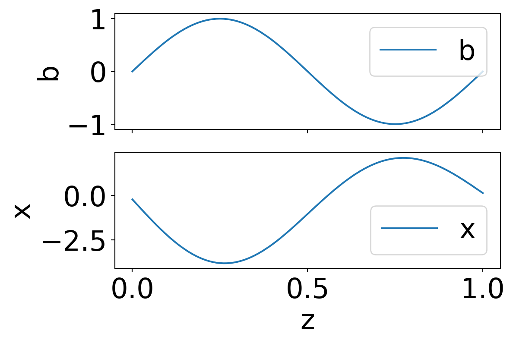

Example Quarto HTML Document
1 Section
here is a paragraph with some bold text and some italicized text and some bold italicized text
1.1 subsection
This is a bulleted list
- spatial discretization of governing PDEs → high-dimensional systems of equations
- high-dimensionality → high cost
and this is an enumerated one (note you need to have full blank lines between paragraphs/lists)
- examples: control, optimization, uncertainty quantification
- traditional simulation is too expensive for the many-query setting
Here is some in-line math: \(\pmb{x}\in\mathbb{R}^d\), and here is some display math:
\[ \hat{\pmb{A}} = \pmb{W}_r^\top\pmb{A}\pmb{V}_r \]
and here are some references (if you hover over the rendered link it will show the full citation, which is cool):
1.2 column layout
this is how you make columns (not sure why you’d need to for notes, but handy for slides)
Static problems: \[ \mathbf{A}\pmb{x} = \pmb{b}, \]
\[ \pmb{f}(\pmb{x})=\pmb{0}, \]
Dynamic problems: \[ \dot{\pmb{x}}(t) = \mathbf{A}\pmb{x}(t) + \pmb{b}\,u(t) \]
\[ \dot{\pmb{x}}(t) = \pmb{f}(\pmb{x}(t)) + \pmb{b}\,u(t) \]
1.3 executable code demo
you can toggle the echo option at the top of the code block to either render the code or not render it. There are also quarto options to fold the code (make it so you have to click to open it) and you can set some of these options at the top of the document.
note that you need to have all relevant python packages installed in the environment that you run this from.
2 Bibliography
Antoulas, Athanasios C. 2005. Approximation of Large-Scale Dynamical Systems. Advances in Design and Control. Society for Industrial and Applied Mathematics. https://doi.org/10.1137/1.9780898718713.
Benner, Peter, Serkan Gugercin, and Karen Willcox. 2015. “A Survey of Projection-Based Model Reduction Methods for Parametric Dynamical Systems.” SIAM Review 57 (4): 483–531. https://doi.org/10.1137/130932715.
Benner, Peter, Mario Ohlberger, Albert Cohen, and Karen Willcox. 2017. Model Reduction and Approximation. Computational Science & Engineering. Society for Industrial and Applied Mathematics. https://doi.org/10.1137/1.9781611974829.